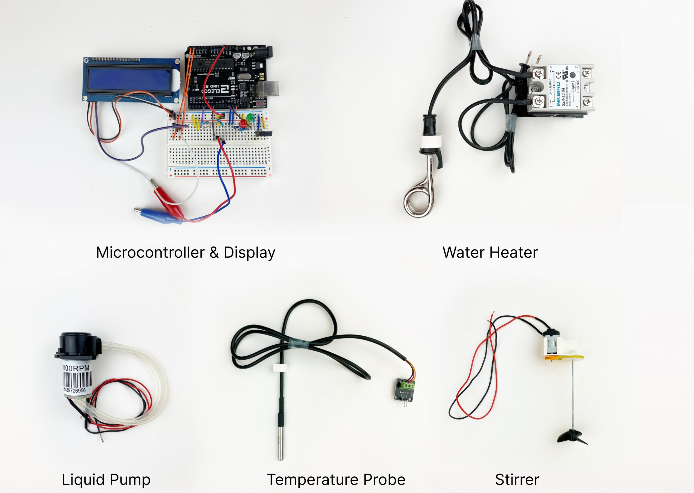

KnitScape
We built a browser-based tool for exploring the surprising design
space of slip and tuck colorwork using a live yarn-level simulation.
Playing the Print
We interactively tune machine settings using MIDI controllers and
consider strategies to document the resulting outcomes.
Technical Mentality
We present four principles for HCI research and practice based on
Simondon's concept of technical mentality.
The Duckbot
We built custom tools and software to automate imaging and
manipulation of duckweed for plant biology experiments.
Dynamic Toolchains
We built an event-driven dataflow environment to scaffold
development of new digital fabrication workflows.
3D Printers Don’t Fix Themselves
We study how practitioners maintain their FFF 3D printers in the
home and find that maintenance is core to our participants' printing
practice.
Forking a Sketch
We pair network analysis with qualitative techniques to capture
high-level patterns and meaningful details about how creative coders
remix sketches.

Doufu, Rice Wine, and 面饼
We investigate how to support the connections between precision and
cultural knowledge in cooking.
Imprimer
We show how to use computational notebooks to unlock new ways of
working with CNC mills.
Pathways to Open-Source Hardware for Laboratory Automation
Bringing together a community of scientists to collaborate on ways
of sharing, vetting, and maintaining open source hardware for
science and engineering research.
Verso
Exploratory digital fabrication often involves low-level machine
programming, to which Verso adds within-code GUIs and expressive
toolpath visualization.
Studying Community Biolabs
From a qualitative study of community biolabs, we discuss how
members are creating new approaches to laboratory biology with
implications for systems that support non-traditional settings for
scientific practice.
p5.fab
A system for controlling digital fabrication machines from the
creative coding environment p5.js, informed by insights into 3D
printing practice.
Interactive Digital Fabrication Machine Control Directly Within a
CAD Environment
Enabling control of digital fabrication machines from a
Computer-Aided Design (CAD) environment, including interactive
control of toolpath geometry as well as machine parameters such as
speed, acceleration, or jerk.
Taxon
A language that encodes machines, workflows, and rules of thumb as
programs. Taxon applies the safety and extensibility of programming
to hands-on making.
Studying #PlotterTwitter
We conducted a qualitative study of #PlotterTwitter and found that
makers champion creative exploration of materials over a predictable
series of steps.
Teaching Digital Fabrication Online
Through interviews, we found that learning with hobbyist equipment
and online social networks could emulate using industrial equipment
in shared workshops.
Lamifold
Lamifold is a workflow for making functional mechanical objects
using a laser cutter.
Jubilee
Jubilee is an open-source hardware machine with automatic
tool-changing and interchangeable bed plates.
Machine-o-Matic
Initial investigations into representing parts of fabrication
workflows as programs.
Fabricatable Machines
A Toolkit for Building Digital Fabrication Machines.
Cardboard Machine Kit
A framework for the rapid prototyping of rapid prototyping machines.
Modular hardware, modular electronics, and modular software.
Popfab
A portable, multi-purpose digital fabrication tool that folds into a
briefcase.
Material Flow in Makerspaces
An investigation into the practices that makerspaces around the
world use to keep track of their materials.